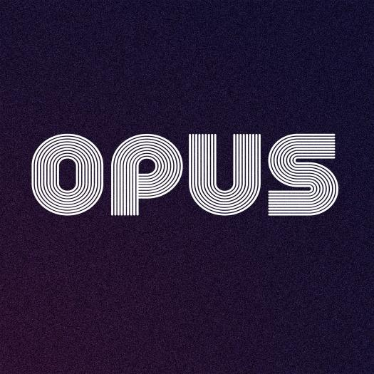

Activités
L'emploi du temps d'une journée à Opus est découpée en trois parties. Le matin, l'après-midi, et les soirées, qui sont occupées par les concerts. Cette répartition est le reflet d'une volonté commune de proposer, plus qu'une fête, une occasion de gagner à vivre ensemble pendant ces quatre jours.
Les matins, des ateliers d'une heure environ permettront de s'initier ou de s'enrichir les un-e-s des autres dans des domaines divers. Chant, musique, fabrication de pain, reconnaissance de plantes, sont uniquement des exemples de ce que notre réunion, dans toute sa diversité, pourrait permettre de faire.
Des activités plus récréatives jalonneront les après-midis. Courses d'orientation, baignade dans la rivière, volley-ball, randonnées, ou toutes les autres idées qui pourraient venir à l'esprit de ceux et celles qui vivront sur la comète seront proposées entre le déjeuner et le dîner. A partir de 16h00, chaque après-midi sera aussi l'occasion de profiter de la rivière et des galets qui la bordent en écoutant des DJs proposer leur set pour accompagner ces moments de détente.
Il est possible de proposer un atelier ou une activité en envoyant un mail à chillanka.asso@gmail.com afin d'être mis-e en contact avec l'équipe d'organisation.